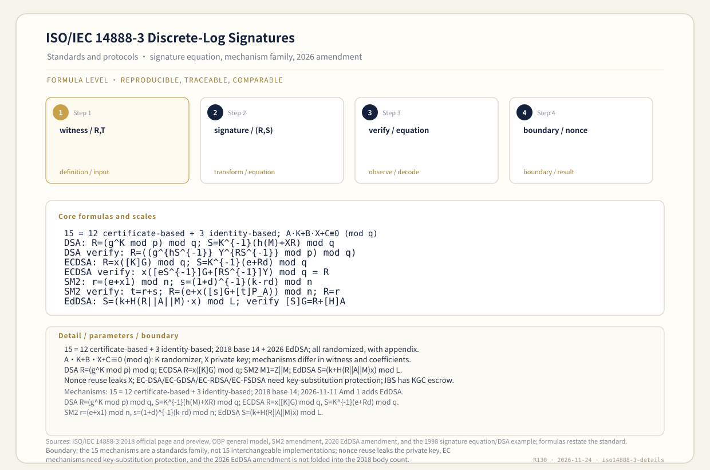
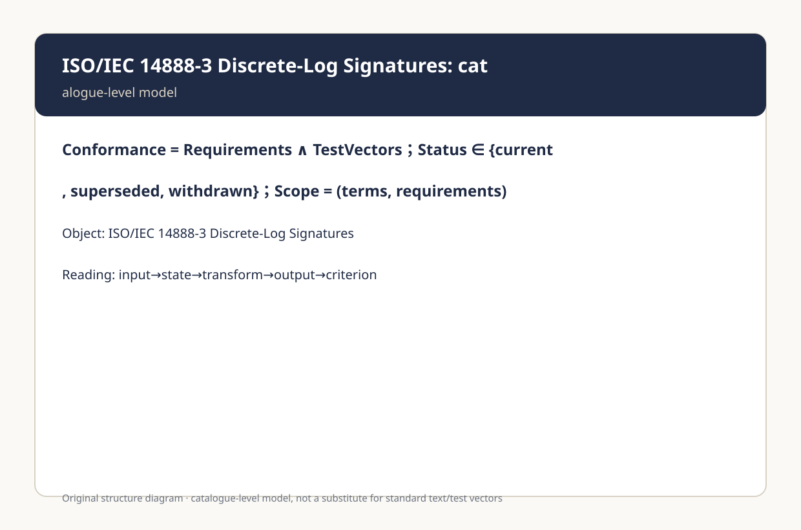

Principles
Standard: Digital signatures with appendix — Part 3: Discrete logarithm based mechanisms (基于离散对数的数字签名). ISO/IEC 14888-3:2018 specifies digital signatures with appendix based on the discrete logarithm problem. The 2018 body has 14 mechanisms; the November 2026 amendment adds EdDSA, making 15: 12 certificate-based and 3 identity-based. All are randomized; the signature is appended to the message and the message is not recovered from the signature. The general model is not “hash and sign”: it has five stages: produce randomizer K; compute pre-signature Π; prepare M1/M2; compute witness R (first signature part); compute assignment (T1,T2) and second part S. The general signature equation is A·K+B·X+C≡0 (mod q), where X is the private key and A/B/C come from a permutation of (S,T1,T2). DSA works in Z_p*: R=(g^K mod p) mod q and S=K^{-1}(h(M)+XR) mod q; verification recomputes R. ECDSA works on curve points: R=x([K]G) mod q and S=K^{-1}(e+Rd) mod q. SM2 prepares M1=Z||M, where Z binds the identity ID, curve parameters and public key; it signs r=(e+x1) mod n and s=(1+d)^{-1}(k-rd) mod n. EdDSA works on a twisted Edwards curve: R=[k]G and S=(k+H(R||A||M)x) mod L. A compact notation is Sig=(R,S) and Verify(pk,M,(R,S))∈{0,1}; the standard gives mechanisms, not side-channel protection.

Why it matters
Putting 14/15 mechanisms together reveals “one equation, different groups and witness functions”. DSA/ECDSA/SM2/EdDSA are not four unrelated algorithms: each starts from a random K and private X and uses a verifiable equation to bind R and S to the message.
The 2018 fourth edition added SM2 and Chinese IBS; the 2026 amendment added EdDSA and reworded the key-substitution note as “can be vulnerable”, making clear that the standard does not supply that protection. EdDSA binds the public key A into the hash by design and therefore carries a layer of key-substitution protection.
Identity-based mechanisms (IBS-1, IBS-2, Chinese IBS) have a different trust model: the KGC generates private keys and therefore escrows them; certificate-based mechanisms have a CA authenticate public keys. Formula-level writing must keep these trust models separate.
Applications
Implementation order: 1) choose mechanism and group; 2) validate domain parameters and public keys; 3) generate private X and public Y; 4) use a fresh random K for every signature; 5) compute R/S; 6) encode in DER or the standard appendix format; 7) the verifier recomputes the equation and checks R/S ranges.
SM2 first computes Z=Hash(ENTL||ID||a||b||x_G||y_G||x_A||y_A), then M1=Z||M; EdDSA follows the standard/RFC 8032 Edwards encoding and cofactor handling. Identity-based schemes must validate KGC parameters and private-key derivation.
Engineering checks: is K truly random and unique; are R/S in [1,q-1]; is the hash collision-resistant; is the public key bound into the signed message; is key-substitution protection present; are certificate chain/KGC identities verified; is the implementation constant-time.

Limits & attacks
Nonce reuse is fatal: two messages signed with the same K let an attacker solve the two S equations for the private key. K bias, low-entropy RNG and fault injection can also leak the key.
EC-DSA, EC-GDSA, EC-RDSA and EC-FSDSA can be vulnerable to key substitution: an attacker finds two distinct public keys and one signature valid for both; the standard suggests adding the public key to the signed message. Identity-based mechanisms have KGC escrow, so the KGC can create any user’s private key.
The standard does not cover side channels, fault injection, API misuse or signature-encoding ambiguity, and does not prove “signature equals security”. The EdDSA amendment is a 2026 addition and does not change the count of the other 2018 mechanisms.
History
The 1998 first edition was certificate-based and contained DSA and Pointcheval/Vaudenay; the 2006 second edition reorganized the part around discrete-log mechanisms and added KCDSA, IBS-1 and IBS-2; Amd 1:2010 added SRA, EC-RDSA, EC-SDSA and EC-FSDSA; the third edition appeared in 2016; the 2018 fourth edition added SM2 and Chinese IBS for 14 mechanisms; Amd 1:2026, published in November 2026, added EdDSA for 15.
Worked example & verification
Formal model and reproduction steps
[S=\min_i S_i,\quad S_i\in{\text{密钥强度},\text{分组安全},\text{实现安全}}]
Digital signatures with appendix — Part 3: Discrete logarithm based mechanisms: the registered public parameters, key material or randomness, and message are mapped through the stated transformation to an output checked against the registered criterion. The worked example is a structural reproduction, not a new test vector; parameter ranges, standard versions and implementation details remain source-bound.
References
- Wikipedia search entry for 基于离散对数的数字签名. https://zh.wikipedia.org/w/index.php?search=%E5%9F%BA%E4%BA%8E%E7%A6%BB%E6%95%A3%E5%AF%B9%E6%95%B0%E7%9A%84%E6%95%B0%E5%AD%97%E7%AD%BE%E5%90%8D
- Handbook of Applied Cryptography (Menezes, van Oorschot, Vanstone). https://www.cacr.math.uwaterloo.ca/hac/